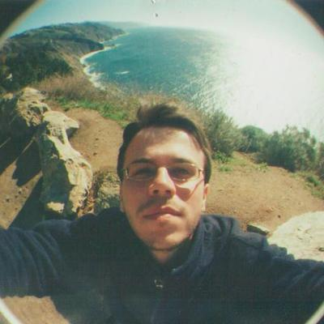

|  | CURRENT POSITION: Chargé de recherche CNRS Institut de Physique du Globe de Strasbourg CNRS - EOST - University of Strasbourg E-mail: zacharie.duputel[]unistra.fr Tel: +33 (0)3 68 85 00 39 |
RESEARCH INTERESTS My scientific research is primarily aimed at understanding earthquakes and volcanoes. In my current projects, I combine seismological and geodetic measurements to inform models describing the Earth's response to various phenomena (earthquake ruptures, magma intrusions, etc.). The methods I use include waveform modeling, Bayesian statistics, Monte Carlo methods and template matching techniques. LATEST NEWS: September 2020 Our article on the impact of 3D Earth structure on W-phase CMT parameters has been accepted at GJI. Results suggest a significant impact on centroid locations while the effect on other source parameters remains relatively small. See Publications. April 2020 Our article on the relationship between the accumulation of stress before large earthquakes and the building of topography has been accepted at GRL. We propose to compare current vertical velocity field, predicted by a coupling model, to quaternary estimates of uplift to quantify how much uplift is left after several earthquake cycles in Northern Chile. See Publications. September 2019 Our paper on the 2007 Piton de la Fournaise caldera collapse has been accepted in EPSL. Source analysis indicates a piston-like source with the contraction of the magma reservoir and the collapse of the above rock column. Results also confirm that surface subsidence was preceded by VLP precursors. See Publications. May 2019 Our paper on the 2007 Piton de la Fournaise caldera collapse has been submitted. A preprint is available here on EarthArXiv. April 2019 Our Open Access paper on the 2017 Ezgeleh (Iran) earthquake has been accepted for publication in GRL. We use a Bayesian approach to characterize the source and highlight a very impulsive rupture. See Publications. December 2018 Our Open Access paper linking earthquake locations within Piton de la Fournaise to where the lava comes out has been accepted for publication in GRL. See Publications. November 2018 Our Open Access paper reporting the first observation of potentially recurrent deep SSEs in Chile has been accepted for publication in GRL. See Publications. September 2018 I have been awarded an ERC Starting Grant. The PRESEISMIC project will start in January 2019. Applications from potential graduate students and postdocs are welcome. Look out for available positions here. July 2018 Our paper on the stochastic analysis of the Mw7.8 Pedernales earthquake and strain budget along the Ecuador-Colombia subduction zone has been accepted for publication in EPSL. See Publications. March 2018 Congratulations to Dr. Baptiste Gombert who just defended his PhD! Baptiste will continue as a postdoc at the University of Oxford (UK) working on slow-slip events in Cascadia. See Baptiste webpage here.